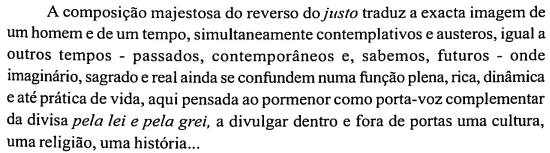

O justos e os espadins foram inicialmente lavrados para serem enviados numa embaixada ao papa, ocorrida em 1485. Essa embaixada era decisiva para o futuro do país. Não só se procurava justificar a "limpeza social" ocorrida nos anos anteriores, rematada com mortes e perseguições de pessoas muito importantes e influentes; como se tentava evitar a todo o custo o risco de excomunhão ou de guerra civil, solidificando o poder do monarca. Para tanto, D. João II enviou uma delegação com diplomatas de peso. Rui de Pina, ainda jovem, mas sobretudo Vasco Fernandes de Lucena, um dos nossos maiores humanistas portugueses, que declamou perante o sumo pontífice uma oração de obediência em que evocava o mito de Ourique para sustentar a grandeza de Portugal. Aparentemente, essa missão diplomática teve o intuito de oferecer uma cruzada ao papa. No entanto, quer o justo, quer o espadim, foram inicialmente instrumentos diplomáticos, que asseguraram a transmissão de uma mensagem e de uma posição de força perante o novo papa recém eleito. Queria D. João II dizer que tinha sido justo, que fez o que fez por um bem maior e que era essa a vontade de Deus, por si representada na terra. De repente, nos alvores do renascimento, vemos surgir o homem moderno e o estado moderno. Em baixo, algumas palavras da senhora professora Maria Graciana Dias Marques sobre o justo, com ideias certamente mais poéticas e etéreas que as minhas.